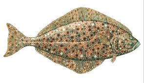

The Pcific Halibut Fish
There are many great destinations for halibut fishing in Alaska. While on the cruise, halibut fishing is available in Juneau and Ketchikan. You can check the shore excursions offered by your cruise line for fishing trips that coordinate with the ships port schedule. While on the land portion of your trip, halibut fishing is available in Seward and Homer. Halibut is a milk, sweet-tasting fish that is high in protein, B vitamins and omega-3 fatty acids. The potato chip-crust makes this baked halibut recipe especially appealing to kids.
The Pacific halibut is the world's largest flatfish.[5] The IGFA record was apparently broken off the waters of Norway in July 2013 by a 515-pound 8.6 foot fish. This is awaiting certification as of 2013.[6] In July 2014, 76-year-old Jack McGuire caught a 482-pound Pacific halibut in Glacier Bay, Alaska (this is, however, discounted from records because it was shot to prevent injury to those on the boat).[7] Halibut are dark brown on the top side with an off-white underbelly and have very small scales invisible to the naked eye embedded in their skin.[8] At birth, they have an eye on each side of the head, and swim like a salmon. After six months, one eye migrates to the other side, making them look more like flounder. At the same time, the stationary-eyed side darkens to match the top side, while the other side remains white. This color scheme disguises halibut from above (blending with the ocean floor) and from below (blending into the light from the sky) and is known as countershading.
Halibut feed on almost any fish or animal they can fit into their mouths. Juvenile halibut feed on small crustaceans and other bottom-dwelling organisms. Animals found in their stomachs include sand lance, octopus, crab, salmon, hermit crabs, lamprey, sculpin, cod, pollock, herring, and flounder, as well as other halibut. Halibut live at depths ranging from a few meters to hundreds, and although they spend most of their time near the bottom,[1] halibut may move up in the water column to feed. In most ecosystems, the halibut is near the top of the marine food chain. In the North Pacific, common predators are sea lions, killer whales, salmon sharks and humans.
Filleting of Pacific halibut taken in Cook Inlet, Alaska. Each halibut yields four fillets; the yield percentage is higher than for most types of fish. The North Pacific commercial halibut fishery dates to the late 19th century and today is one of the region's largest and most lucrative. In Canadian and US waters, long-line fishing predominates, using chunks of octopus ("devilfish") or other bait on circle hooks attached at regular intervals to a weighted line that can extend for several miles across the bottom. The fishing vessel retrieves the line after several hours to a day. The effects of long-line gear on habitats are poorly understood, but could include disturbance of sediments, benthic structures, and other structures. International management is thought to be necessary, because the species occupies waters of the United States, Canada, Russia, and possibly Japan (where the species is known to the Japanese as ohyo), and matures slowly. Halibut do not reproduce until age eight, when about 30 in (76 cm) long, so commercial capture below this length prevents breeding and is against US and Canadian regulations supporting sustainability. Pacific halibut fishing is managed by the International Pacific Halibut Commission. For most of the modern era, halibut fishery operated as a derby. Regulators declared time slots when fishing was open (typically 24–48 hours at a time) and fisherman raced to catch as many pounds as they could within that interval. This approach accommodated unlimited participation in the fishery while allowing regulators to control the quantity of fish caught annually by controlling the number and timing of openings. The approach led to unsafe fishing, as openings were necessarily set before the weather was known, forcing fisherman to leave port regardless of the weather. The approach limited fresh halibut to the markets to several weeks per year, when the gluts would push down the price received by fishermen.[citation needed]
In 1995, US regulators allocated individual fishing quotas (IFQs) to existing fishery participants based on each vessel's documented historical catch. IFQs grant to holders a specific proportion of each year's total allowable catch (TAC). The fishing season is nine months. The IFQ system improved both safety and product quality by providing a stable flow of fresh halibut to the marketplace. Critics of the program suggest, since holders can sell their quota and the fish are a public resource, the IFQ system gave a public resource to the private sector. The fisheries were managed through a treaty between the United States and Canada per recommendations of the International Pacific Halibut Commission, formed in 1923. A significant sport fishery in Alaska and British Columbia has emerged, where halibut are prized game and food fish. Sport fisherman use large rods and reels with 80–150 lb (36–68 kg) line, and often bait with herring, large jigs, or whole salmon heads. Halibut are strong and fight strenuously when exposed to air. Smaller fish will usually be pulled on board with a gaff and may be clubbed or even punched in the head to prevent them from thrashing around on the deck. In both commercial and sport fisheries, standard procedure is to shoot or otherwise subdue very large halibut over 150–200 lb (68–91 kg) before landing them. Alaska's sport fishery is an element of the state's tourism economy.